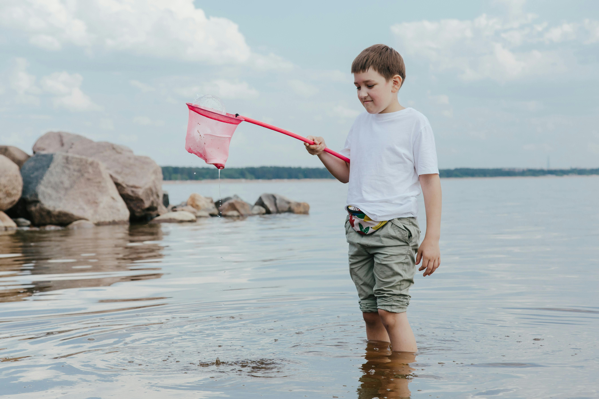
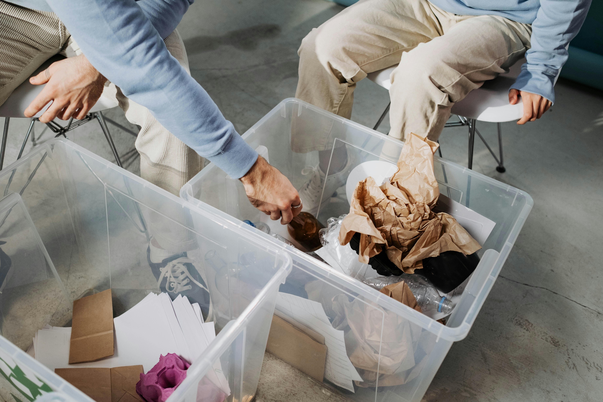
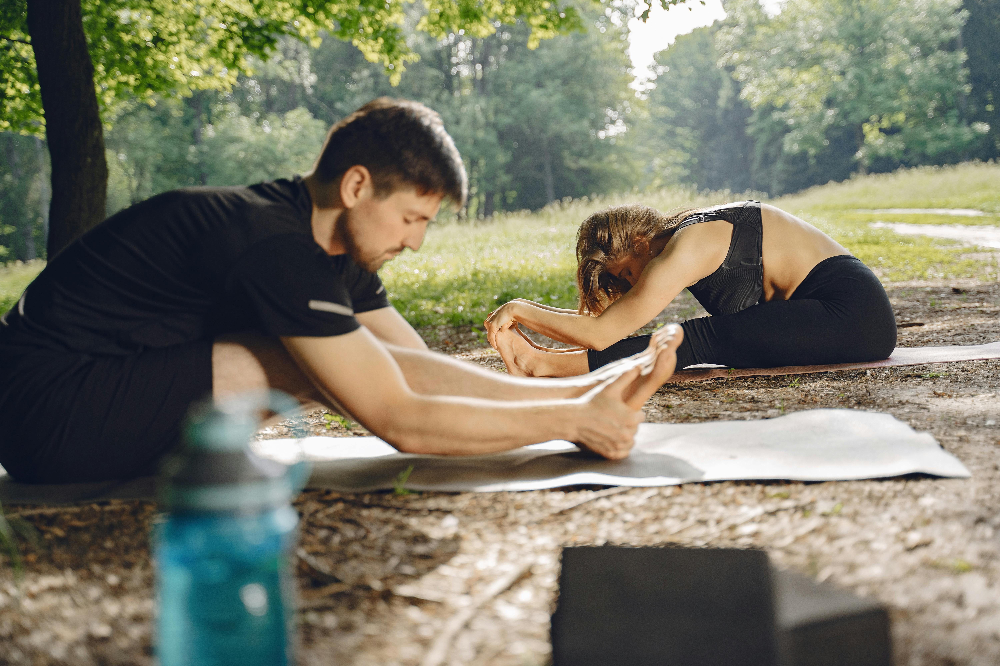

JejakHijau
JejakHijau BumiMeter
BumiMeter SadarPoint
SadarPoint SaranHijau
SaranHijau
SOLUSI SADARIN
Bangun Kebiasaan Pengelolaan Sampah Yang Lebih Cerdas.
Sadarin membantu masyarakat memahami, mencatat, dan mengurangi dampak sampah melalui sistem digital modern yang interaktif, edukatif, dan mudah digunakan. Mulai dari rumah, setiap langkah kecil dapat menjadi perubahan besar untuk lingkungan.
Bersama Sadarin, Perubahan Dimulai
Sadarin hadir untuk membantu masyarakat menciptakan lingkungan yang lebih sehat, ekonomi yang lebih berkelanjutan, dan kehidupan yang lebih baik.



